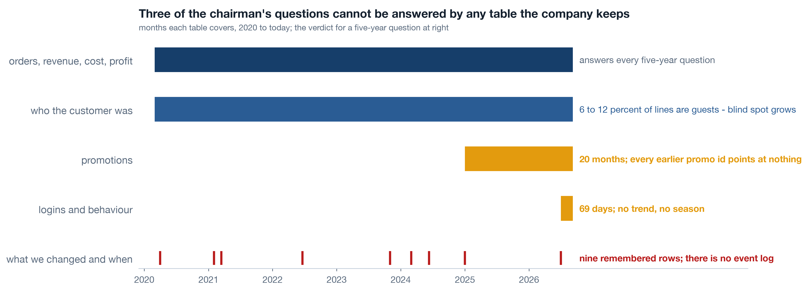
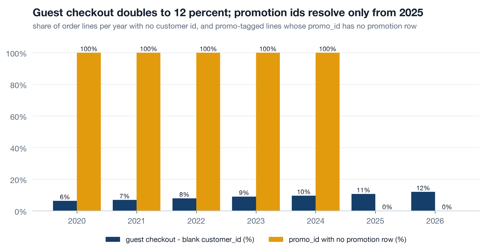
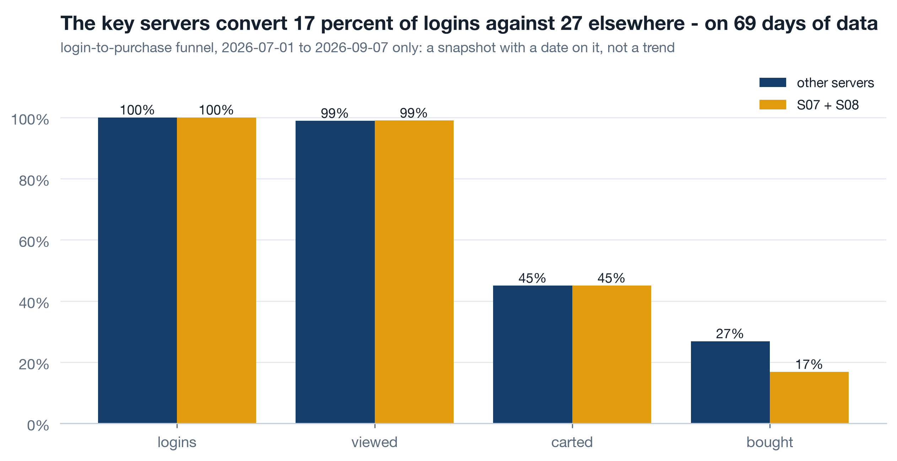
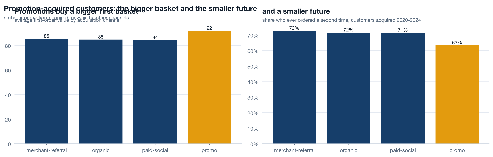
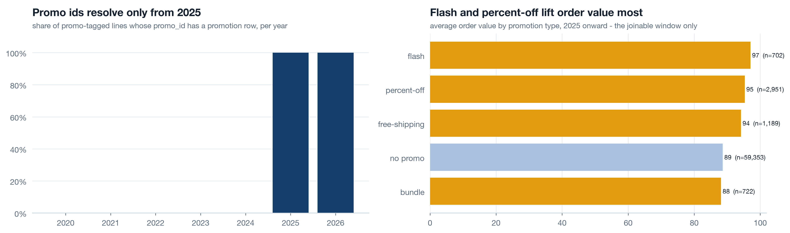
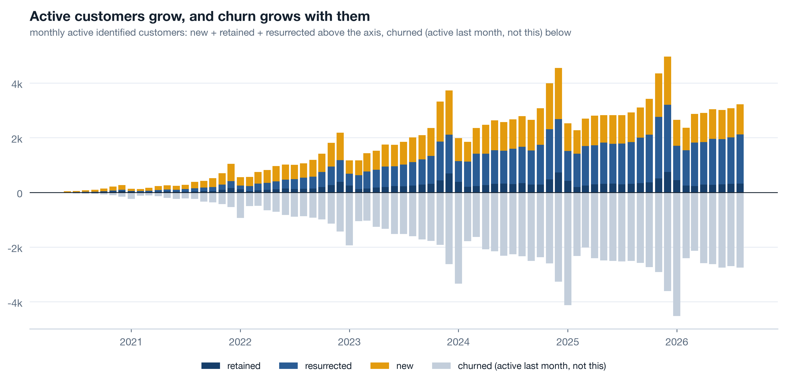

The last chairman session
Session c1 made the case for the whole history and handed you the map. Session c2 walked the break, the lag and the turn. This session is act six: decide and collect. Everything you heard becomes a row in a table with an owner, a number and a review date, because a recommendation without those three is a wish with a chart attached. The analyst track builds the same tables in code from the same notebooks, so when your team presents them, you will already know which row each chart belongs to.
What we cannot see, and who owns that 12 min live
Before any analysis ran, the analysts drew one chart: which table covers which month. Five years of order lines, sixty-nine days of logins, a promotion table that starts in 2025 while promo codes have been stamped on orders since 2020, and no record at all of what changed on the platform when. Each of those is usually filed as a technology gap. It is an ownership gap first: a table with no owner starts when a module launches and keeps whatever the default retention setting says.
Live The availability heatmap 3 min▶
One chart to draw before any other: tables down the side, months across the top, a filled cell wherever a table has rows. It takes an hour and it saves months, because it turns "we cannot answer that" from an argument into a picture. Read this one and you know immediately that any question about logins is a two-month question, any question about promotion types is a 2025 question, and any question about what changed on the platform has no table at all.

| Question | Needs | Answerable span | Verdict |
|---|---|---|---|
| Revenue, cost, margin by server, merchant, product | fact_transaction | 2020-01 to 2026-09 | yes, full history |
| Customer cohort retention | fact_transaction, customer id | full history minus guests | yes, with a growing guest blind spot |
| Login-to-purchase funnel, device, session depth | fact_login | 2026-07 to 2026-09 | two months only - no trend, no season |
| Did a promotion type lift baskets or retention? | fact_transaction x dim_promotion | 2025-01 to 2026-09 | 20 months; earlier promo ids unresolvable |
| What changed on the product or infra when the numbers moved? | known_events, 9 rows from memory | sparse | no - there is no event log |
| Fulfilment cost per order | nothing exists | none | no - cost is a unit constant per SKU |
| Product views, cart adds before 2026-07 | nothing exists | none | no |
Live Two identity gaps 3 min▶
Two kinds of row have no name on them. The first is the guest checkout: 6.3 percent of order lines in 2020 carried no customer id, 11.9 percent in 2026. Every retention number computed from this data excludes them, and the blind spot grows every year as more customers choose not to sign in. The second is the orphaned promotion: promo codes were stamped on orders from 2020, but the table that says what each code was starts in January 2025, so four years of promotions are ids that point at nothing.

Neither gap needs new technology. A hashed email or phone at guest checkout gives a customer an identity that survives not signing in, and it is a decision each merchant has to take for their own customers. A promotion table that keeps every code for its whole life is a decision the two marketing teams have to take between them. Ask who owns it before asking what it costs.
Live A funnel with a date on it 3 min▶
Sixty-nine days of login data, from July to September 2026, is all the behavioural history the platform has. Read it for what it is: a snapshot. Login to purchase converts at 16.8 percent on the key servers against 26.9 percent on the rest - consistent with everything c2 found, and a useful place to point product effort. What it cannot tell you is whether that gap is new, seasonal or permanent, because there is no earlier summer to compare with. A chart like this carries its date in the title so nobody quotes it as a trend.

Self-study The event log that does not exist 4 min▶
Every long chart of the platform carries the same nine vertical lines: the fulfilment change, the merchant-success cut, a checkout release, a few pricing changes. Those nine rows were written down from memory during the diagnosis, because nowhere in the company is there a record of what changed on the platform and when. Releases live in a deployment tool that keeps ninety days. Incidents live in chat. Business decisions live in slide decks. None of it joins to a month on a revenue chart.
This is the highest-leverage gap in the whole diagnosis, and it is not a technology gap. An event log is a table with five columns - date, what changed, scope (which server, which merchant), owner, link to the decision - and it fails for one reason only: writing to it is nobody's job. Treat it as a data product with an owner and a contract. Engineering owns release and incident events. The leadership team owns decision events. The metric layer joins both to every chart automatically.
- A gap is an ownership gap before it is a tech gap. Ask "whose table is this" before "which tool".
- Memory is data too. The nine remembered rows are the first nine rows of the log. Start from them.
- The log earns its keep on the next diagnosis. Every future "why did the number move" starts by reading it. Without it, every diagnosis starts from interviews.
Decisions with owners 20 min live
Three tables. Every row has five columns and a row missing any one of them does not ship. The recommendation says what to do. The outcome metric says how you will know. The owner is a role, not a name, so it survives a reorganisation. The first review is a date in the diary before the work starts. And the pre-mortem is one line written from 2027 beginning "this failed because" - which, more often than not, turns out to be the real recommendation.
Live Business: nine moves 7 min▶
The order matters. c2 established that the March fulfilment change reached the customer and the June merchant-success cut compounded it, so the first two rows are the two levers in that order. The next seven are the growth findings, each traceable to a chart you have already seen.
| Recommendation | Outcome metric | Owner role | First review | Pre-mortem: it is 2027 and this failed because |
|---|---|---|---|---|
| Reverse or re-price the S07/S08 fulfilment decision | Key-server margin back toward 42 percent from 29.3; monthly gap to pre-shift margin from 8.4k toward zero | COO, with the fulfilment lead | 60 days | we renegotiated cost without repricing and the volume term moved instead |
| Restore Vietnam merchant success, with upskilling | Key-server merchant churn hazard from 2.39 back toward 1.26 percent a month | Head of merchant success | 90 days | we rehired but gave the team no leading-indicator list, so it measured funerals again |
| Merchant acquisition by server tier and vertical where retention is earned | 12-month merchant survival of new vintages by tier | Head of merchant acquisition | Quarterly | quota stayed on onboarded count, so the team acquired everywhere |
| Customisation push: tooling and margin share for merchant SKUs | Merchant-SKU share of revenue; customer repeat rate from 28.1 toward 33.9 percent | Head of product, with merchant success | 90 days | the tooling shipped but the margin share never did, so merchants had no reason to switch |
| Bundle and cross-sell programme from measured lift | Attach rate of mug + t-shirt, poster + cushion, notebook set against today's base | Head of catalogue | 60 days | bundles were priced as discounts and cannibalised the second item |
| Upsell ladder inside each line | Share of orders on the top rung of the price ladder per line | Head of catalogue | Quarterly | the ladder existed in the catalogue but not on the product page |
| Product diversification: bags up, stationery down | Category revenue share, bags and stationery, year on year | Head of catalogue | Quarterly | stationery stayed because a founder liked it |
| Per-merchant customer preference profiles handed to merchants | Repeat rate of merchants using the profile against those who do not | Head of merchant success | 90 days | profiles were a PDF once a quarter; nobody opened them |
| Promo policy: acquisition promos buy baskets, not customers | Ever-repeat of promo-acquired customers from 63.4 toward 71.5 percent; first basket held near 91.8 | CMO | Quarterly | the promo budget was measured on first-order revenue and nothing else |
Live Tech: eight fixes, one of them first 6 min▶
None of these needs a platform migration. Each is a table, a field or a rule, and each is owned by a domain from the ownership map. The first row is the one that pays for all the others.
| Recommendation | Outcome metric | Owner role | First review | Pre-mortem: it is 2027 and this failed because |
|---|---|---|---|---|
| Release and incident event log as a data product | Share of releases and incidents with a log row; target 100 percent within a quarter | Head of engineering | 30 days | writing to it was nobody's job; the fix was a required field in the release gate, not a wiki |
| Business decision log, same shape, same join | Every pricing, fulfilment and staffing decision dated and scoped within a week | Chief of staff | 30 days | decisions were logged after the fact from slide decks and the dates were guesses |
| Guest-checkout identity by hashed email or phone | Share of order lines with no id from 11.9 percent toward the 2020 level of 6.3 | Head of product, per merchant | 60 days | merchants saw it as friction and turned it off |
| Login history retained beyond 60 days | Months of login history available; target the full five years going forward | Head of product analytics | 30 days | the retention setting reset when the analytics tool was upgraded |
| promo_id resolvable for its whole life | Share of stamped promo ids that resolve to a promotion row | Platform and merchant marketing, jointly | 60 days | two teams each assumed the other owned the table |
| Duplicate guard on order ingestion | Exact-duplicate lines per month; S02 2021 was 3.4 percent | Head of data engineering | 30 days | the guard ran on the warehouse, not the source, and a reload slipped past it |
| Metric layer computing cohorts with frozen history | Zero restated retention numbers between two board packs | Head of data | 90 days | teams kept their own spreadsheets because the layer was slower than a pivot |
| Store and merchant status as events, not overwritten fields | Active-store count equals stores with an order in 90 days, within a few percent | Head of merchant success | 60 days | the dimension was fixed once and drifted again because closure was still manual |
Live Data to collect: eight things the business does not record 5 min▶
These are the questions the availability table marked "no". Each becomes a row with the same five columns, because collecting data nobody owns produces a table nobody trusts. The first row is the one that would have turned the cost story from an allocation into a fact.
| Collect | Outcome metric | Owner role | First review | Pre-mortem: it is 2027 and this failed because |
|---|---|---|---|---|
| Fulfilment cost per order: shipping, supplier, returns | Cost is a live per-order value, not a unit constant per SKU | COO, with finance | 90 days | suppliers invoiced monthly in bulk and nobody allocated it back to orders |
| Product views and cart events | Funnel available for every month, not 69 days | Head of product analytics | 60 days | the events fired but were never joined to a customer or a server |
| Marketing spend by channel and server | Acquisition cost per customer and per merchant, per server - unknowable today | CMO | Quarterly | spend lived in agency reports with a country column that did not match a server |
| Merchant acquisition funnel: pitched, trialled, onboarded | Conversion at each step by tier and vertical | Head of merchant acquisition | Quarterly | the sales team logged onboarded merchants only, because that was the bonus |
| Merchant health signals: logins, catalogue edits, campaigns | Weekly list of merchants below the month-three thresholds: 1.3 months to first sale, 399 in 90 days | Head of merchant success | 30 days | the list existed and nobody was paid to call it |
| Delivery time and returns | Delivery days and return rate per server and per line | COO | Quarterly | carriers reported by country and the platform could not split it by server |
| Support tickets joined to customers and merchants | Ticket rate per hundred orders, per server | Head of support | Quarterly | the ticket tool had no customer id field |
| Competitor price references per line | Price index per line against the market, refreshed quarterly | Head of catalogue | Quarterly | collected once for a board deck and never again |
Self-study The promotion double edge 4 min▶
Promotions do two things at once and the company only measured one. Customers acquired through a promotion place a first basket of 91.8 against 84.7 for organic customers - the promotion works, on the day. But 63.4 percent of them ever order again against 71.5 percent of organic customers. Acquisition promos buy baskets, not customers. That does not make them wrong; it makes them a basket tool that should be measured as one, with the repeat cost written next to the basket gain.


The promotion-type view is honest about its own limit: it covers twenty months, because the table that names each promotion did not exist before. That is the orphaned-id gap from Part 1 showing up as a shorter chart. Fix the ownership and the chart grows backwards.
Self-study Growth accounting as the monthly opener 3 min▶
If the monthly review opens with one chart, this is it. Active customers this month equal new plus retained plus resurrected; the churned bar below the line is what left. It cannot be gamed by a growth number, because growth is the top of the stack and churn is the bottom, on the same axis. Had it been on the wall in 2024, the key-server churned bar would have grown two quarters after the cost decision and someone would have asked why.

- Per server, then platform. The blended version is the one that hid the break. Ten small versions, then the total.
- Merchants get the same chart. c2 showed the merchant version; both belong on the same wall.
- Frozen history. Last month's bars do not change when this month's data lands.
The 90-day plan and the pre-mortem 5 min live
Twenty-five rows is a plan for a year. Ninety days needs nine, and the first three need to be things a single person can finish without a budget cycle. Then, before any of it ships, the top three go through a pre-mortem: sit in 2027, assume it failed, and write the sentence.
Live The pre-mortem on the top three 3 min▶
It is 2027. The event log exists. Nobody writes to it. Why? Because writing to it was nobody's job: it was a page in a wiki, engineers were asked nicely, and the third week of a busy quarter was the last time anyone opened it. The fix that survives the pre-mortem is a required field in the release gate - a deployment does not go out without a log row, and a decision is not minuted without one. The log fills itself because the thing people already have to do now produces it.
| Top-three item | It is 2027 and it failed because | So the recommendation becomes |
|---|---|---|
| Event log | writing was nobody's job | a required field in the release gate and the decision minute, not a wiki page |
| Per-server margin wall | it showed twelve months and the step scrolled off | full history by default; the window is a zoom control, never the default view |
| Guest identity | merchants saw friction and switched it off | hash at checkout, invisible to the customer, with the merchant's own repeat rate as the reason |
Build the owner table for your business ★ 8 min · everyone builds
Take the three recommendations you would most like to make in your own company this quarter. Give each of them the five columns, in this order, and notice which column is hardest to fill - that is where the recommendation is weakest.
Write the recommendation as a verb. Reverse, restore, retain, hash, log. Not "review" or "consider" - those are ways of deciding later.
Name the outcome metric with today's value. "Repeat rate from 17.2 toward 28.8 percent", not "improve retention". If you do not know today's value, the first task is to measure it.
Name the owner as a role. Head of merchant success, not a person's name. Roles survive reorganisations; names leave and take the recommendation with them.
Put the first review in the diary now. Thirty, sixty or ninety days, with the people who can act in the room. A review booked after the work starts gets moved.
Write the pre-mortem. "It is 2027 and this failed because ..." One sentence. If the sentence names an incentive or a default, rewrite the recommendation to fix that instead.
Strike the row you cannot complete. A row with no metric is a wish; a row with no owner is a meeting. Keep the finding in the appendix and come back when you can fill all five.
Try it yourself - this week ◐ 30 min
- Draw the availability heatmap for your own business by hand: the five tables you rely on most, and the months each one actually covers. Mark the one that starts most recently and ask who owns it.
- Take the last set of recommendations you approved. For each, write down the owner role, the outcome metric and the review date. Count how many have all three.
- Pick your single most important initiative for next year and write its pre-mortem: it is 2027 and it failed because. Show the sentence to the person who owns it.
What this session draws on
Turning findings into decisions borrows from decision science, data-product ownership, sales and growth operations, and one very useful exercise from product management. This page teaches the working core of:
Three questions before you go 🎯 ◐ 90 seconds
1 · A team proposes "launch a bundle programme" as a recommendation. What is missing before it can go in the table?
The finding is real and the decision is real. But a recommendation with no number cannot be judged, with no owner cannot be chased, and with no date will be chased never. Attach rate of mug + t-shirt against today's base, owned by the head of catalogue, reviewed in sixty days - now it is a row.
2 · The promotion table starts in 2025 while promo codes have been stamped on orders since 2020. What kind of gap is this, first?
Two marketing teams each assumed the other owned the promotion table, so it had no contract and no retention rule. Every gap in the ownership map has the same shape: the table did whatever its default did because no domain was accountable for it. Name the domain first; the technology is the easy part.
3 · The pre-mortem on the event log reads "it is 2027 and nobody writes to it". What does that sentence change?
The pre-mortem finds the recommendation hiding inside the recommendation. A log that depends on goodwill fails in the first busy quarter; a log that fills itself because a deployment cannot ship without a row survives. The answer to "why did it fail" is almost always an incentive or a default, and that is what gets rewritten.